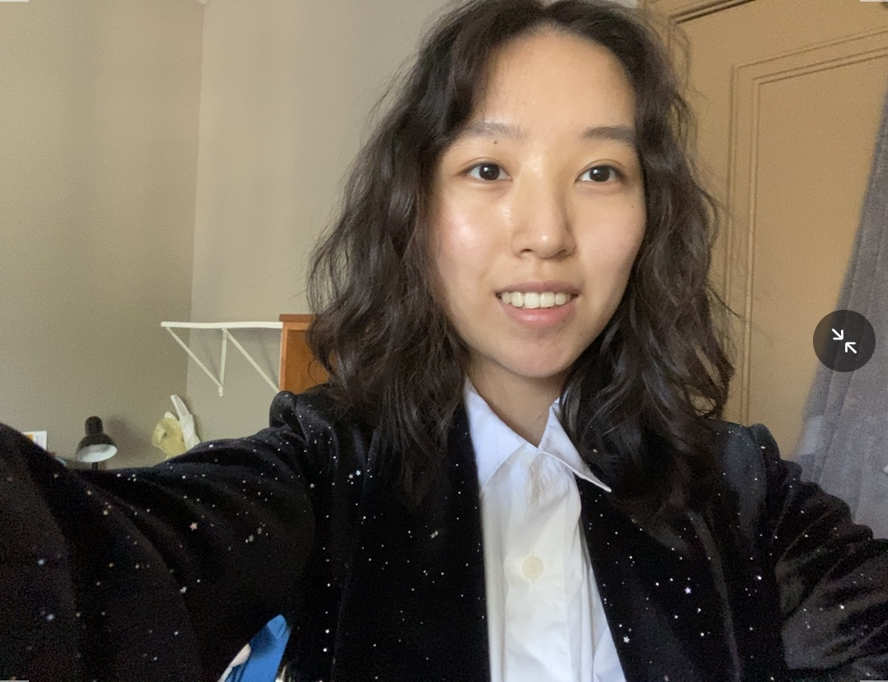

Name:Ruixi Wang
Major:Statistics | Year:Junior
I'm a BGA student. I think UC Berkeley is really a cool and lively place and I love all those buildings, trees, grass and squirrels in campus!
My birthday is in May. I have a sweet tooth. My favorite movie is Interstellar. And I hope to have a great time at web design this semester!

Click here to see my favorite website!
Part2:Reading
- 1.Think outside the box when browsing websites and apps, look at the details of the website/app interface and think about the reasons behind.
- 2.Clear interface decomposition guide. Sufficient example description and motion picture demonstration.
- 3."Don't just use apps, study them."
- 4.9